11:20–11:40 Master data
ผลรวม: ผ่าน
http://localhost:4200/register/head-tail
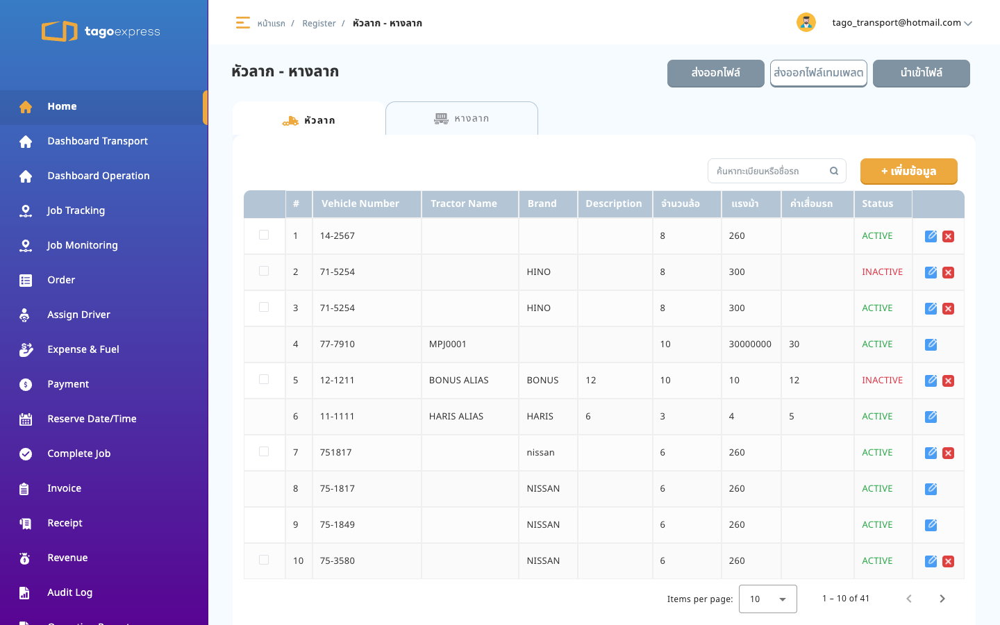
http://localhost:4200/register/driver
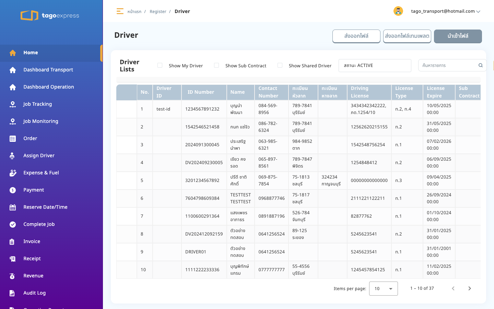
http://localhost:4200/register/sub-contract
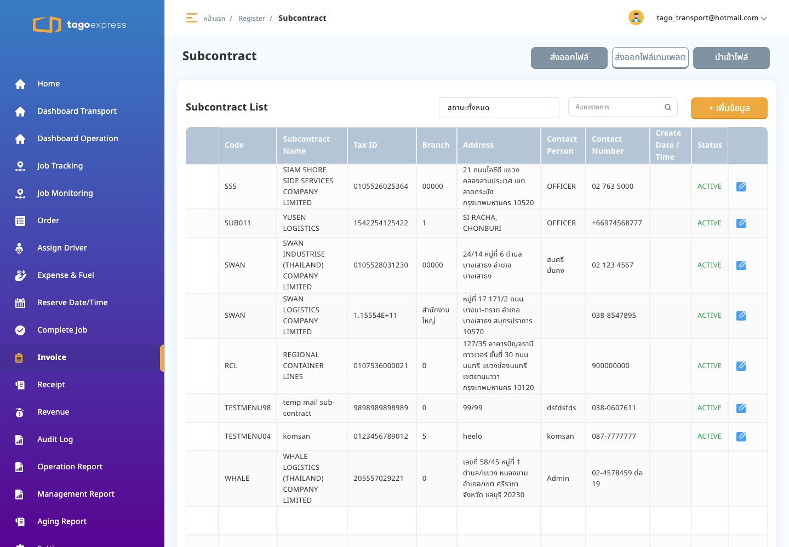
http://localhost:4200/register/customers
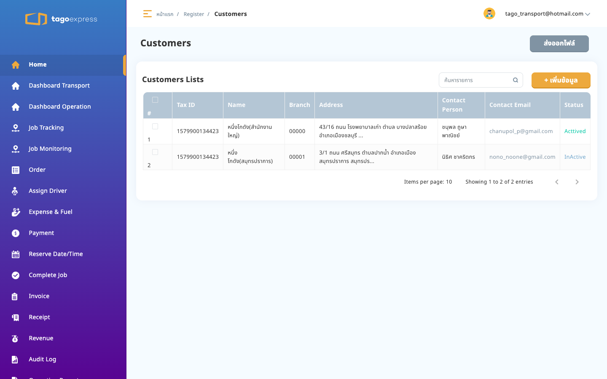
http://localhost:4200/master-setting/users
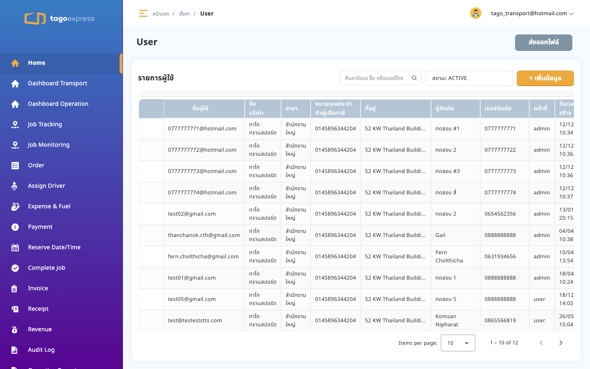
http://localhost:4200/master-setting/company-profile
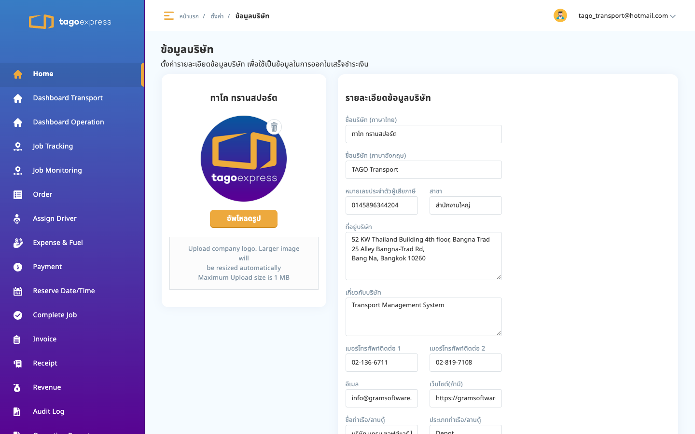
http://localhost:4200/master-setting/customer
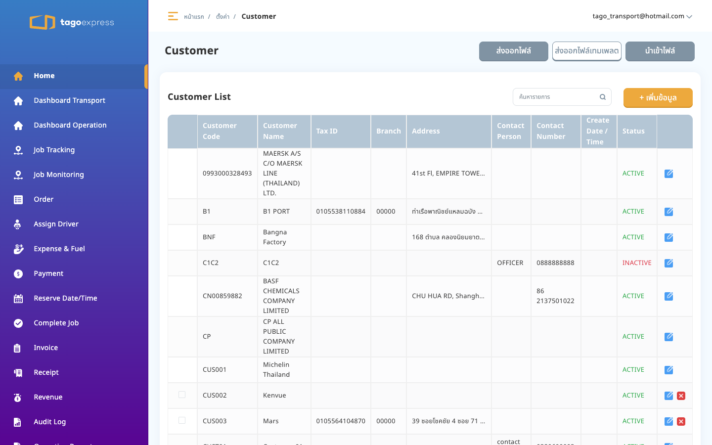
http://localhost:4200/master-setting/cost
นี่คือคลังค่าใช้จ่ายของ TMS ชื่อหน้าจอ Expense Cost รายการชนิด EXPENSE และ INCENTIVE ถูกเลือกไปผูกในฟอร์ม Route
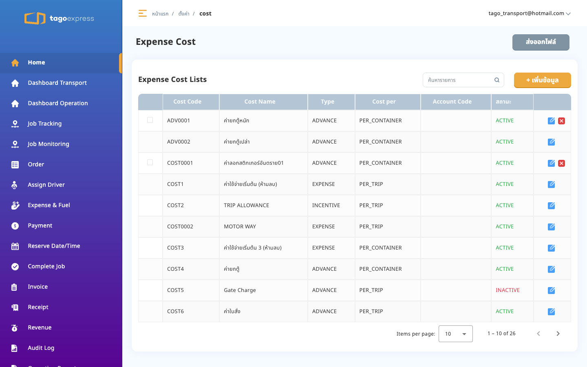
http://localhost:4200/master-setting/fuel_rate
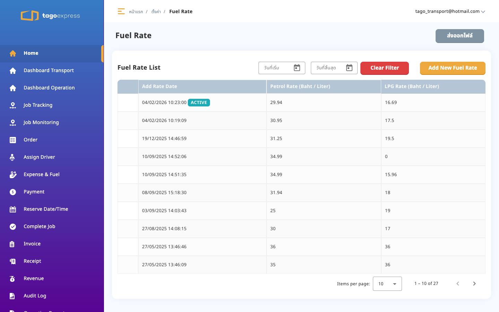
http://localhost:4200/master-setting/route
คอลัมน์ Expense Cost และ Incentive Cost คือยอดที่ผูกจาก Cost master เส้นทาง BNF - LCB มียอด 450 และ 100
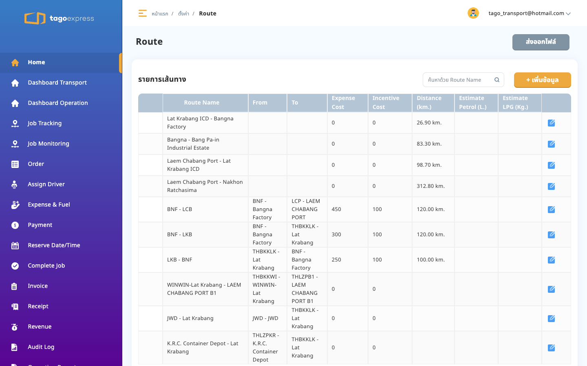
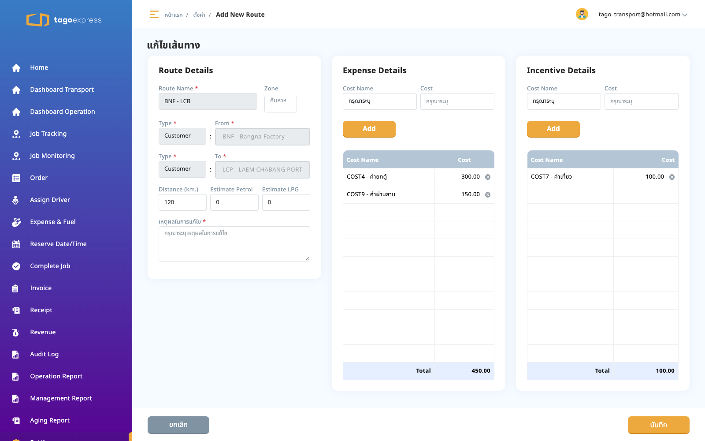
http://localhost:4200/master-setting/customer-route-price
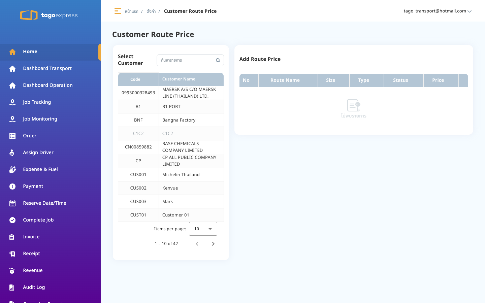
http://localhost:4200/master-setting/sub-contract-route-price
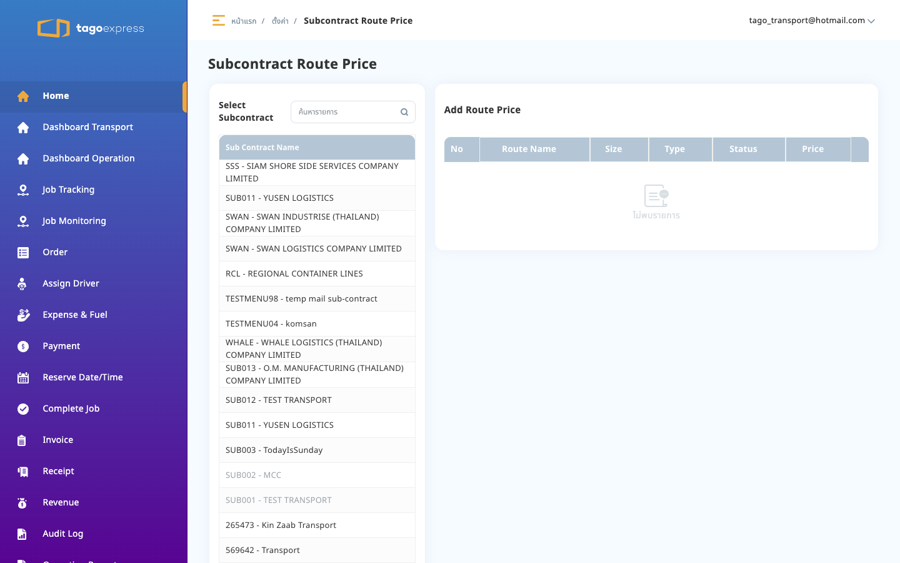
http://localhost:4200/master-setting/check-list
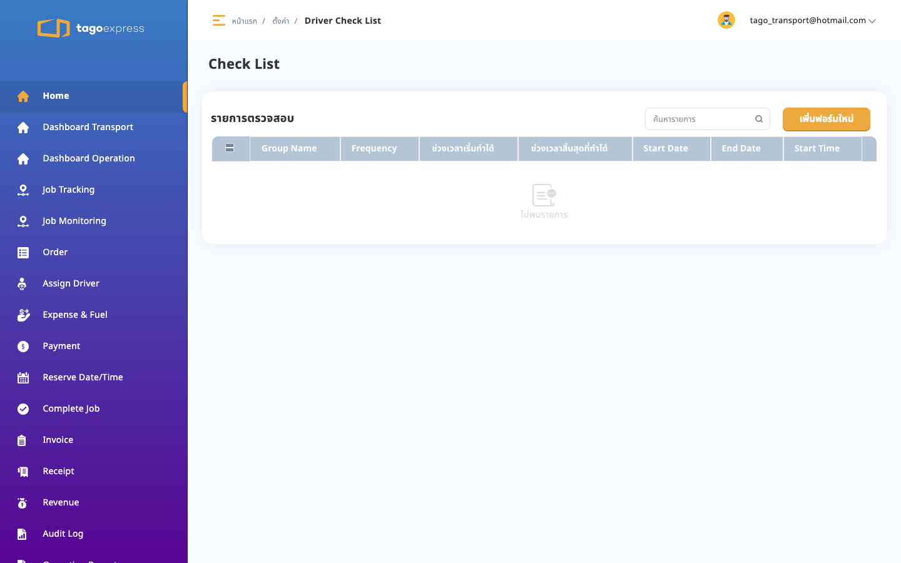
http://localhost:4200/master-setting/notification-settings
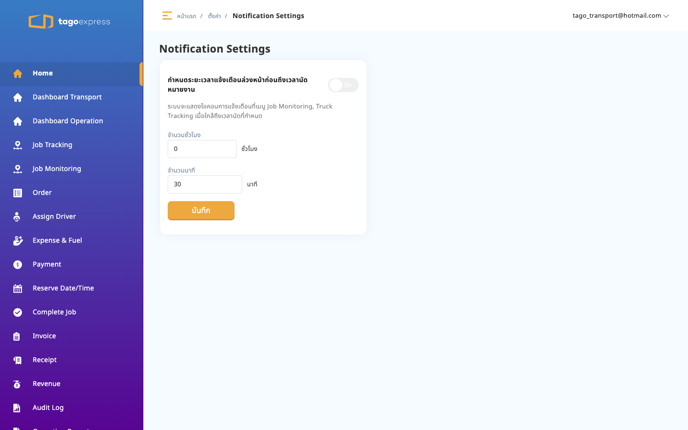